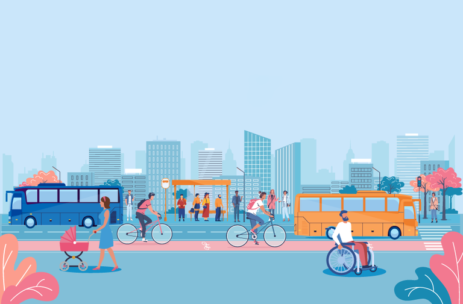

Enchentes e seus efeitos
As enchentes no Brasil são tragédias recorrentes que afetam milhões de cidadãos todos os anos.
Falta de prevenção, drenagem urbana deficiente e mudanças climáticas tornam a situação ainda mais grave.
Tecnologias Utilizadas

Utilizamos um sensor nível de água integrados a um microcontrolador (Arduino) para monitoramento ambiental em tempo real. O sistema é capaz de detectar situações de risco com precisão.
As informações são exibidas no display LCD com interface simples e acessível, permitindo que qualquer pessoa possa visualizar os alertas. A solução também utiliza LEDs de status, EEPROM para armazenar dados e pode ser expandida com APIs externas.
Objetivos
Nosso principal objetivo é prevenir e mitigar os impactos das enchentes por meio da tecnologia, oferecendo uma ferramenta acessível, confiável e eficiente para monitoramento em tempo real.
Além disso, buscamos promover uma cultura de prevenção, incentivando prefeituras, escolas e comunidades a adotarem soluções tecnológicas como aliadas na gestão de riscos ambientais.
Público-Alvo
A solução foi desenvolvida para atender moradores de regiões urbanas sujeitas a alagamentos, especialmente em comunidades vulneráveis.
Também é voltada para órgãos públicos, Defesa Civil, escolas e organizações que atuam com educação ambiental, gestão de risco e planejamento urbano.
Benefícios
Com o uso da solução, será possível antecipar situações de risco, emitir alertas rápidos e evitar perdas humanas e materiais.
Ela também fortalece a participação da comunidade, melhora a resposta das autoridades e contribui para um ambiente mais seguro, sustentável e preparado para mudanças climáticas.
Como Utilizar Nossa Solução no Dia a Dia?
Instale o sistema próximo a cursos d’água. Ele funciona de forma automática, com avisos sempre que o nível subir demais.
Os dados ficam gravados na EEPROM com data e hora, facilitando o acompanhamento histórico das enchentes na região.